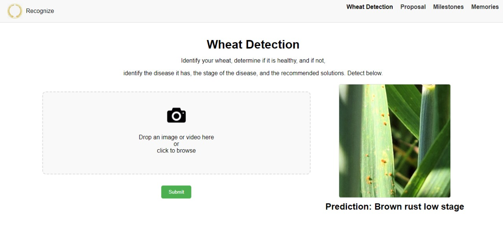
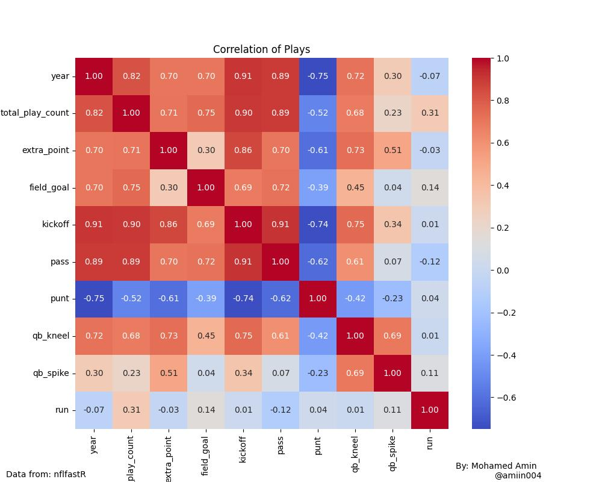

Wheat disease detection
This project utilizes computer vision to detect wheat diseases using advanced image processing with OpenCV and YOLO models. After collecting and preprocessing the training data, it analyzes video frames and image directories to accurately identify and quantify healthy and diseased wheat, enhancing agricultural monitoring and early disease detection.

Historical Football Trends
In this project, I analyzed and cleaned 1 million rows of football data spanning over 24 years to uncover trends over time. By examining this extensive dataset, I identified patterns in the popularity of different plays and their correlations, providing insights into how football strategies have evolved.

Possession Causes Fouls
In this project, I debunked the narrative that high possession correlates with clean football. By analyzing data, I demonstrated that higher possession leads to more frequent fouls, revealing it as a defensive strategy used by ball dominant teams.
My Personal View of Growing Up in a War-Torn City
This is a reflective narrative recounting my childhood in war-torn Somalia and the emotions stirred by those memories while now residing in a peaceful country. It's a story that aims to inspire and encourage, capturing the haunting yet inspiring essence of my experiences
The Spirit of Learning Knows No Bounds
In this story, I encountered a driver whose life epitomized parental sacrifice and aspiration, despite his limited digital skills. This narrative underscores the profound value placed on education and determination in Pakistani society.

Combe back for more
Under process